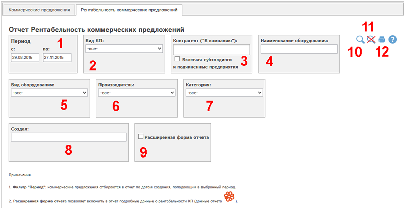
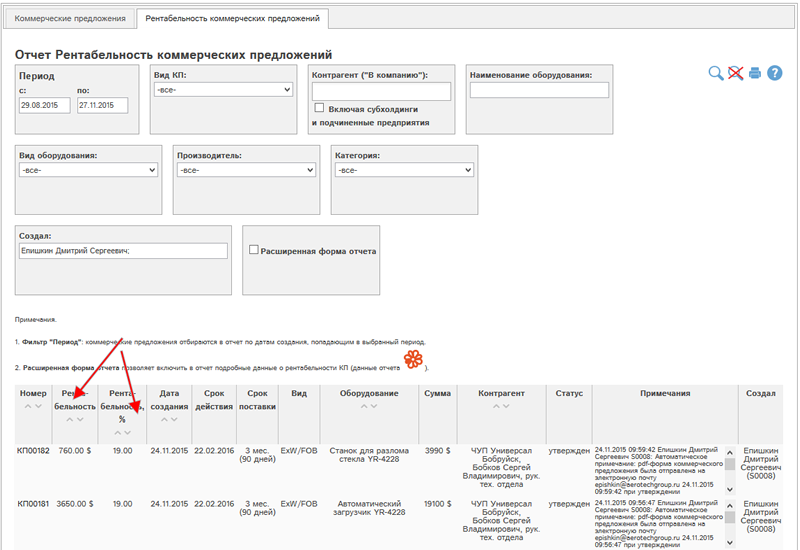
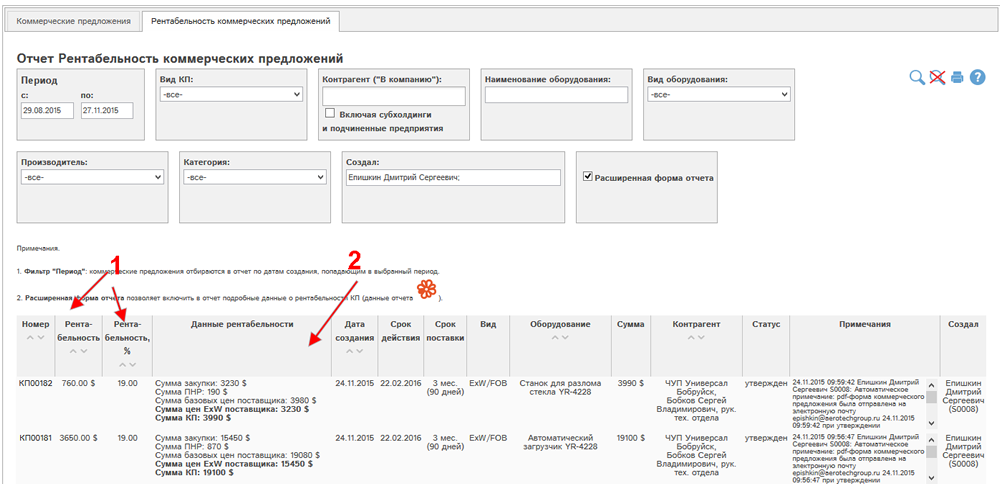

В этом отчете показаны все КП и их рентабельность (в статусах "утверждено", "не актуально") за выбранный период для текущей организации.
Рассмотрим форму отчета:

Рис. Отчет «Рентабельность коммерческих предложений»: форма отчета.
(1) – период: КП отбираются в отчет по датам создания, попадающим в выбранный период.
(2) - вид КП: отбор КП по виду цен (ExW, DDPM)
(3) - Контрагент ("В компанию"): отбор КП по контрагентам, введенным в поле "В компанию" КП. Галочка "Включая субхолдинги и подчиненные предприятия" позволяет выбрать в отчет также данные по субхолдингам и подчиненным предприятиям выбранных контрагентов.
Группа фильтров по оборудованию, включенному в КП:
(4) - Наименование: отбор по наименованию оборудования
(5) - Вид оборудования: отбор по разделу прайс-листа
(6) - Производитель: отбор КП по производителю включенного оборудования - для выбора нужно сначала выбрать значение в фильтре (5)
(7) - Категория - отбор КП по категории оборудования - для выбора нужно сначала выбрать значение в фильтрах (5-6).
(8) - Создал: выбор КП по ответственному менеджеру.
(9) - Расширенная форма отчета позволяет включить в отчет подробные данные о рентабельности КП (данные отчета в форме КП).
(10) – кнопка  («найти») - осуществляет формирование
отчета по указанным параметрам в фильтрах (1)-(9) .
(«найти») - осуществляет формирование
отчета по указанным параметрам в фильтрах (1)-(9) .
(11) – кнопка  («сбросить все фильтры») – сбрасывает все
параметры фильтров (1)-(9), формирует отчет согласно общей логике.
(«сбросить все фильтры») – сбрасывает все
параметры фильтров (1)-(9), формирует отчет согласно общей логике.
(12) – кнопка  («печать») – производится печать отчета
согласно параметрам фильтров (1)-(9).
(«печать») – производится печать отчета
согласно параметрам фильтров (1)-(9).
Пример 1.
Найдем все КП менеджера Епишкин. Начнем набирать в поле "Создал" Епишкин, программа предложит во всплывающем меню вариант "Епишкин Дмитрий Сергеевич", подставим его и нажмем  :
:

Рис. Отчет Рентабельность коммерческих предложений: поиск по ответственному менеджеру.
На рисунке стрелками отмечены данные рентабельности по КП, включенным в отчет.
Пример 2.
Найдем все КП менеджера Епишкин с расширенной формой отчета. Отметим поле (9), нажмем кнопку  :
:

Рис. Отчет Рентабельность коммерческих предложений, расширенная форма: поиск по ответственному менеджеру.
На рисунке цифрой 1 отмечены основные данные рентабельности по КП, включенным в отчет, цифрой 2 - расширенные данные рентабельности.